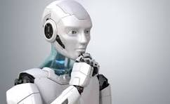
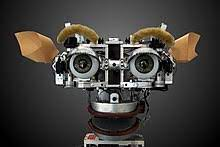
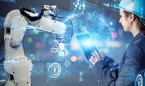

Robotics is the interdisciplinary study and practice of the design, construction, operation, and use of robots.[1] Within mechanical engineering, robotics is the design and construction of the physical structures of robots, while in computer science, robotics focuses on robotic automation algorithms. Other disciplines contributing to robotics include electrical, control, software, information, electronic, telecommunication, computer, mechatronic, materials and biomedical engineering. The goal of most robotics is to design machines that can help and assist humans. Many robots are built to do jobs that are hazardous to people, such as finding survivors in unstable ruins, and exploring space, mines and shipwrecks. Others replace people in jobs that are boring, repetitive, or unpleasant, such as cleaning, monitoring, transporting, and assembling. Today, robotics is a rapidly growing field, as technological advances continue; researching, designing, and building new robots serve various practical purposes.
  Mechanical construction: a frame, form or shape designed to achieve a particular task. For example, a robot designed to travel across heavy dirt or mud might use caterpillar tracks. Origami inspired robots can sense and analyze in extreme environments.[2] The mechanical aspect of the robot is mostly the creator's solution to completing the assigned task and dealing with the physics of the environment around it. Form follows function. Electrical components that power and control the machinery. For example, the robot with caterpillar tracks would need some kind of power to move the tracker treads. That power comes in the form of electricity, which will have to travel through a wire and originate from a battery, a basic electrical circuit. Even petrol-powered machines that get their power mainly from petrol still require an electric current to start the combustion process which is why most petrol-powered machines like cars, have batteries. The electrical aspect of robots is used for movement (through motors), sensing (where electrical signals are used to measure things like heat, sound, position, and energy status), and operation (robots need some level of electrical energy supplied to their motors and sensors in order to activate and perform basic operations)
CLICK HERE